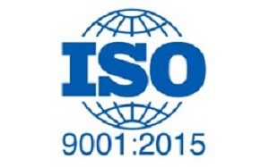
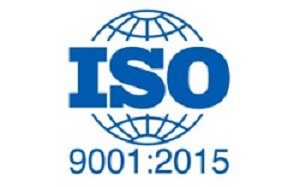
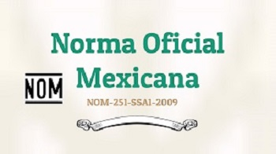
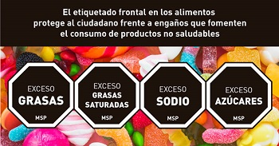

Norma ISO 9001:2015 Sistema de gestión de calidad
La ISO 90001 es una norma Internacional que se aplica en organizaciones públicas y privadas para la mejora de calidad de los productos y servicios, garantizando la satisfacción del cliente.

La ISO 90001 es una norma Internacional que se aplica en organizaciones públicas y privadas para la mejora de calidad de los productos y servicios, garantizando la satisfacción del cliente.
La ISO 22000:2018 indica como lograr la inocuidad de los alimentos a lo largo de la cadena alimentaria, hasta el punto de consumo final.
Los elementos que se deben de desarrollar en esta Norma son los siguientes.
La (NOM)-251-SSA1-2009 tiene como objetivo establecer los requisitos mínimos de buenas prácticas de higiene que deben observarse en la elaboración de alimentos, bebidas o suplementos alimenticios y sus materias primas, con el fin de evitar su contaminación a lo largo de su proceso.
La NOM NOM-051-SCFI/SSA1-2019 regula el sistema de etiquetado frontal que deben tener todos los alimentos y bebidas no alcohólicas preenvasados, destinadas al consumidor final, de fabricación nacional o extranjera, comercializados en territorio nacional.
Las normas ISO son internacionales y son las que rigen en la mayoria de los países, para poder exportar un producto a otro país se necesita cimplir con ellas y las NOM solo se aplican en México.